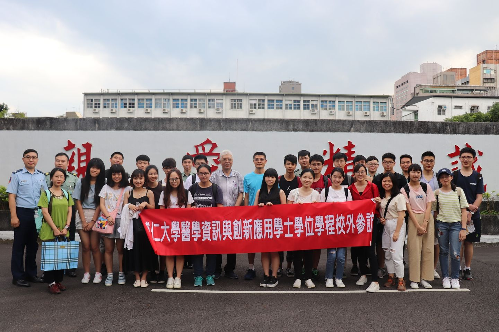

隨著科技的進步，資訊設備已經普遍進入醫療的環境，產生了大量的醫學資料。現今社會對醫學資訊的需求更加的強烈。無論是對醫學資訊的管理，或是對醫學資訊的研究，皆是未來的重點。此外，網際網路的生活化，使得醫學資訊的發展能更貼近生活應用之中。因此，同時具有醫療背景與資訊工程技術的跨領域人才將是未來所必需的。利用不同領域之間的專業和資源，以多元的視角去分析問題、幫助社會產生更多創新的學術研究與應用知識。
整合理工學院內電機系、資工系、數學系的資源與師資，也跨院連接醫學院的醫學系與公衛系及管理學院資管系的專業知識與資源。本校已於2017年完成輔仁大學附設醫院，可與本學程互補並使雙方互利。學生、學程和醫院(企業)結合，是未來市場趨勢。醫院本身即是一個企業，學生在醫院實習，也是產學合作中心。本學程教學特色包含大三的專業實務專題，與大四下整學期的產業實習，並配合相關教學醫院及醫療資訊企業醫療資訊人才需求。
教學目標 |
1. 醫學資訊專業知識及問題解決 |
| 2. 獨立思考及創新。 | |
| 3. 溝通、協調及合作。 | |
| 4. 跨領域人文關懷精神。 | |
| 5. 自主學習。 | |
核心能力 |
|
| 1. 資訊系統分析、設計、及實作的能力。 | |
| 2. 運用科技及創新的能力。 | |
| 3. 溝通協調及團隊合作能力。 | |
| 4. 口語表達及文件撰寫能力。 | |
| 5. 跨領域人文關懷能力。 | |
| 6. 自我反思及自主學習的能力。 |
本學程規劃以下發展重點：「醫院資訊系統」、「健康照護系統」、「醫學資訊創新應用」。並且，以實務導向為主，結合輔仁大學附設醫院資源，發揮綜效，整合醫學與資訊之跨領域的創新應用，並著重「專題實作」與「產業實習」等實作能力，期許能快速銜接，進入職場。
| 主要課程能力 | 內涵說明 |
| 醫院實務之基礎 | 關於醫療診斷的知識與醫院資訊系統之實務 |
| 資訊工程之基礎 | 規劃程式架構，做為實務系統開發之準備 |
| 創新應用 | 運用醫療背景與資訊工程的技術，以實務為導向、完成跨領域的創新應用 |
文字擷取自輔大醫資>學程簡介、圖片擷取於輔大醫資粉專
粉絲專頁
 Facebook-輔大醫資學程
Instagram-醫資學會